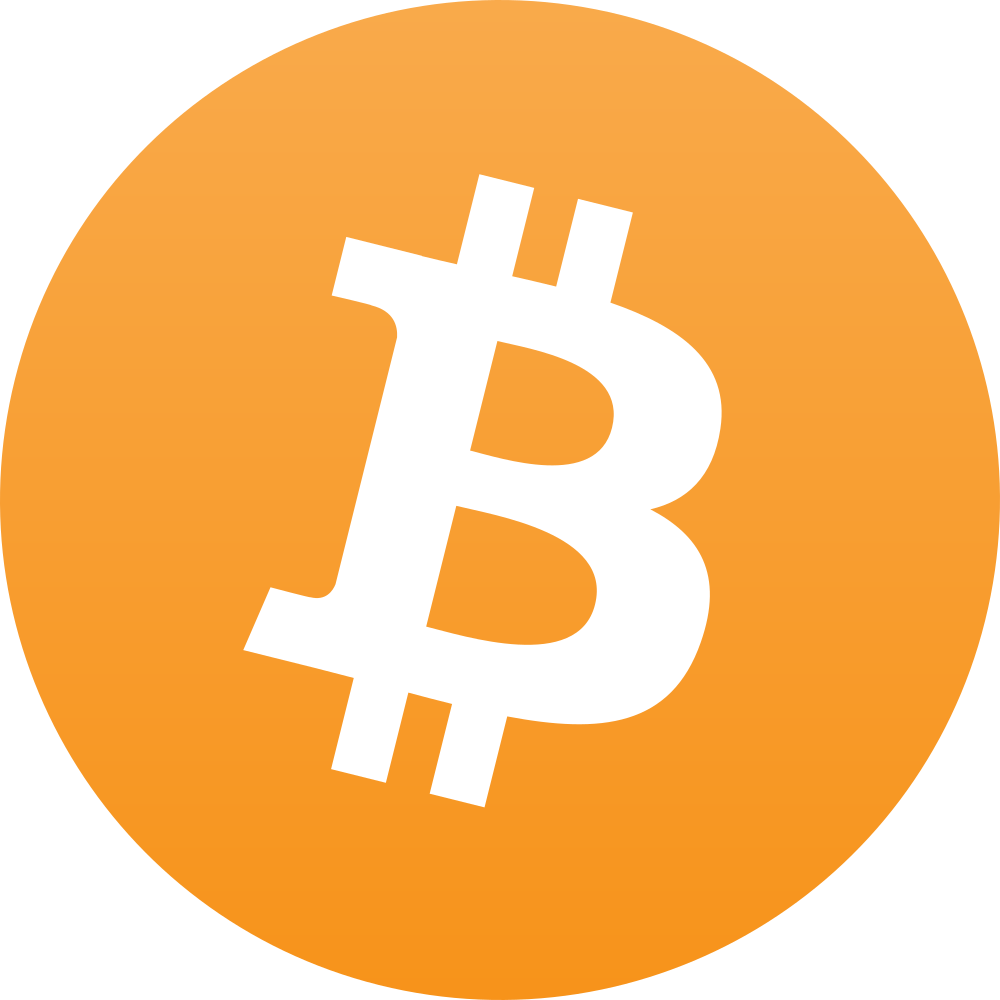
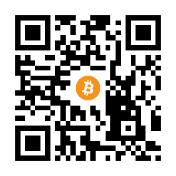

We believe security software like Whonix needs to remain Open Source and independent. Would you help sustain and grow the project? Learn more about our 14 year success story and maybe DONATE!
BisqDocumentationBitcoin CorePrevious page: BisqIndex page: DocumentationNext page: Bitcoin CoreBitcoin

Bitcoin: experimental, decentralized digital currency. Anonymous payments. Anonymous BTC.

Introduction
Bitcoin is: [1]
... an experimental, decentralized digital currency that enables instant payments to anyone, anywhere in the world. Bitcoin uses peer-to-peer technology to operate with no central authority: managing transactions and issuing money are carried out collectively by the network.
Transactions are verified by network nodes through cryptography and recorded in a public distributed ledger called a blockchain. Bitcoin was invented in 2008 by an unknown person or group of people using the name Satoshi Nakamoto and started in 2009 when its source code was released as open-source software. Bitcoins are created as a reward for a process known as mining. They can be exchanged for other currencies, products, and services. Research produced by University of Cambridge estimates that in 2017, there were 2.9 to 5.8 million unique users using a cryptocurrency wallet, most of them using bitcoin.
Without proper precautions paying with Bitcoins is not anonymous. All transactions are saved in a publicly available "eternal logfile". Before using Bitcoin, it is recommended to read some recent, relevant anonymity research:
- Researchers of the Darmstadt University of Technology provided an analysis of Bitcoin's anonymity [2] at the Chaos Communication Congress 2011.
- D.Ron and A.Shamir's 2012 paper found IP addresses of users could be identified and linked with the different Bitcoin addresses of an account. As an example, they published information about the Bitcoin usage of Wikileaks; until March 2012, Wikileaks used 83 Bitcoin addresses and received 2605.25 BTC from supporters.
- This 2018 paper found Tor onion service users could be deanonymized through Bitcoin transaction analysis. In short, they assessed that Bitcoin was pseudonymous because it lacks retroactive operational security, meaning historical pieces of information led to user identification. For example, their analysis showed public information leaks about declared Bitcoin addresses to social networks. In this instance, the blockchain and onion websites could be linked to 125 unique users and ultimately 20 Tor onion services (including The Pirate Bay and Silk Road).
- This 2015 paper provides a thorough review of Bitcoin anonymity research papers that had been published at that time.
Clients
Introduction
A Bitcoin client is: [3]
... the end-user software that facilitates private key generation and security, payment sending on behalf of a private key, and optionally provides:
- Useful information about the state of the network and transactions.
- Information related to the private keys under its management.
- Syndication of network events to other peer clients.
Many readers will be familiar with common Bitcoin clients such as Bitcoin Core and Electrum, but there are numerous options available, many of which are Open Source. It is important to note that a client should be carefully chosen, as wallet and network security can vary markedly. For instance, factors to consider include: [3]
- Wallet security: whether the private keys are encrypted, and if the private keys are stored locally on your device or on a remote server.
- Network security: whether the client has fully implemented the Bitcoin network protocol or not, and if remote servers are trusted to protect against double-spends and other network attacks.
- Maturity: how long the project has been established.
- Setup time: some clients necessitate the downloading and verification of a large amount of data before Bitcoins can be sent or received.
Do not confuse the Bitcoin client with the actual wallet. The wallet is the collection of data that is required to spend or receive bitcoins, and normally includes key-pairs (private and public key) as well as the funds associated with each key-pair. On the other hand, the client is the interface to the network which handles communication, updates the wallet with incoming funds and uses wallet information to sign outgoing transactions. [4]
For a comprehensive list of Open Source clients, see here.
Bitcoin Core
 See Bitcoin Core.
See Bitcoin Core.
Electrum
See Electrum.
Other Clients
As mentioned earlier, a significant number of Open Source Bitcoin clients are available. However, interested readers investigating alternative, Linux-compatible options should note that many of these are not officially packaged by various distributions.
Possible alternatives at the time of writing include: [5]
- Armory
- Bitcoin Knots
- Bitcoin Explorer
- libbitcoin-explorer
- Gocoin
- GreenAddress
- MultiBit
- My Wallet
- JoinMarket
- Wasabi
- Samourai
Wallets that specifically focus on privacy, that use coin tumbling, CoinJoin or other coin mixing strategies are nice in theory but there could be some issues when attempting to spend these Bitcoin later. These might include:
- JoinMarket
- Wasabi
- Samourai
Update: Coin Mixing Illegal - Wallet Developers Arrested - Blockchain - Crypto - CoinJoin
Many centralized cryptocurrency exchanges and merchants refuse to accept coins whose origin has been obfuscated, freeze or even seize such coins. [6] Therefore the user is advised to research the situation thoroughly before proceeding.
https://blockstream.com/green/
https://bluewallet.io/desktop-bitcoin-wallet/
https://getbittr.com/buy-bitcoin
IBANs within the SEPA region to BTC
pocketbitcoin
eWallets
 Warning: Be careful if considering using Bitcoin
webservices / eWallets! In the past, providers offering this service
(like mybitcoin.com) were compromised, [7] resulting in
the theft of all Bitcoins.
Warning: Be careful if considering using Bitcoin
webservices / eWallets! In the past, providers offering this service
(like mybitcoin.com) were compromised, [7] resulting in
the theft of all Bitcoins.
An eWallet or browser-based wallet is: [8]
... an online account with an external provider where bitcoins can be stored. Examples include accounts on currency exchange Markets, online Services and with ecommerce transaction processors. This definition also includes Hybrid e-wallets.
Although convenient, it is risky to store Bitcoins via an eWallet on a third-party website since trust is shifted to the operator. Potentially, the operator might steal the Bitcoins or fail to adequately secure their systems against theft (internal or external). At a minimum these steps should be taken: [8]
- identify a web service that allows the use of Tor Browser
- verify the website operator's identity
- ensure legal recourse is available in the event of theft
- avoid services if they do not utilize an offline wallet (cold storage) for bitcoins unneeded for daily transactions
- minimize the amount of Bitcoins stored with third party operators
- utilize a strong username and password combination
- for additional recommendations, refer to this Bitcoin wiki entry.
For the administration of minuscule amounts, consider LocalBitcoins; registration is not necessary. InstaWallet was previously listed here because it allowed access to the eWallet with a unique link that was generated once you entered the website; there was no password protection. However, the service was compromised in 2013 and it then closed down. [9] Interested readers can research other possible services.
Gratitude is expressed to JonDos for permission to use material from their website. The "eWallets" chapter of the Whonix Money wiki page contains content from the JonDonym anonymous payment page.
Accepting Bitcoin as a Payee
Receiving Bitcoin anonymously (strictly speaking, pseudonymously) as a payee alone is quite easy. Follow these steps:
- Install a Bitcoin client inside Whonix-Workstation™.
- Establish a Bitcoin wallet and check it is functional.
- Provide the Bitcoin address to people who are likely to give money to you. If you are running an anonymous website and would like people to donate, just publish the Bitcoin address (similar to the Whonix Donate page).
The payer is solely responsible for ensuring payments are anonymous. Some organizations try to improve the payer's privacy by providing each individual an extra Bitcoin payment address, but it is unclear if this is beneficial or obfuscates your income better. This article suggests the following steps may improve the anonymity of transactions, but this is a controversial topic and Whonix does not vouch for any of these methods:
- Create and use a new Bitcoin address for each incoming payment.
- Route all Bitcoin traffic through an anonymizer.
- Combine the balance of old Bitcoin addresses into a new address to make new payments.
- Use a third-party eWallet service to consolidate addresses. Some third-party services offer the option of creating an eWallet that allows users to consolidate many bitcoin address and store and easily access their bitcoins from any device.
- Individuals can create Bitcoin clients to seamlessly increase anonymity (such as allowing users to choose which Bitcoin addresses to make payments from), making it easier for non-technically savvy users to anonymize their Bitcoin transactions.
Note that spending received Bitcoin in an anonymous fashion is another topic completely, which is covered in the following sections.
Funding a Bitcoin Wallet
Other than receiving payee funds, a Bitcoin wallet can be funded by mining or by buying Bitcoins directly. It is difficult to mine or buy Bitcoin in significant quantities while remaining anonymous.
Mining
Bitcoin mining is: [10]
... the process of adding transaction records to Bitcoin's public ledger of past transactions (and a "mining rig" is a colloquial metaphor for a single computer system that performs the necessary computations for "mining". This ledger of past transactions is called the block chain as it is a chain of blocks. The blockchain serves to confirm transactions to the rest of the network as having taken place. Bitcoin nodes use the blockchain to distinguish legitimate Bitcoin transactions from attempts to re-spend coins that have already been spent elsewhere.
Mining is intentionally designed to be resource-intensive and difficult so that the number of blocks found each day by miners remains steady. Individual blocks must contain a proof of work to be considered valid. This proof of work is verified by other Bitcoin nodes each time they receive a block. Bitcoin uses the hashcash proof-of-work function.
To earn Bitcoins, two conditions must be met: [11]
- 1MB worth of transactions must be verified.
- You must be the first miner to arrive at the right answer to a numeric problem (also know as the proof of work).
In essence, miners are trying to be the first to discover a 64-digit hexadecimal number ("hash") that is less than or equal to the target hash, which is mostly guesswork. The problem for individuals is this requires a lot of computational power ("hash rate"), as the total number of possible guesses is in the trillions. [11] Unless you join or create a mining pool, the effort is a lost cause. Even then, it takes a lot of time and involves significant electricity costs; see this mining calculator to determine whether it might be a profitable endeavor. [12]
Interested readers should research this topic in further depth, particularly the equipment needed to mine effectively and viable mining pools. While any kind of mining software should be safe in Whonix-Workstation, its effectiveness in a virtual machine is a completely different question; it could be difficult.
Buying
It is also possible to fund the wallet by buying Bitcoin. This section compares the different non-Bitcoin payment methods which can theoretically be used to buy Bitcoin from a Bitcoin market. Practically, it is impossible to buy Bitcoin as an anonymous, untrusted person with any payment method that can be charged back, due to the significant risk of fraud. This includes credit cards, Paypal and other methods.
Please note the comparison of these methods in the Money chapter, specifically the Payer Perspective, Payee Perspective and Payment Processor Perspective entries.
Bank Wire Transfer
Bank wire transfers can be used to buy Bitcoin, but it is difficult (if not impossible) to open an anonymous bank account in any jurisdiction today; see here. The reason is local laws require financial institutions to verify the identity of account holders, primarily to combat money laundering.
Anonymous Credit Cards and Prepaid Cash Cards
Anonymous credit cards, Giftcard, Paysafecard and other prepaid cash cards might be more anonymous; refer to the important footnotes. [13] [14]
It is likely difficult (but not impossible) to find a method of exchanging Paysafecard for Bitcoin, because Paysafecard has stated they do not want to be involved with Bitcoin and anonymity services. Also, the fees are exorbitant. Interested readers can search for "paysafecard Bitcoin exchange" to try and locate relevant services. [15]
Before taking this step, the services must be verified as legitimate since the exchanges are not part of the Bitcoin network. To mitigate the risk services do not take the money or do not send Bitcoin, it may be safer to only send smaller amounts until you have enough Bitcoins.
Buying with Cash
It is also possible to buy Bitcoins with cash or by sending cash via land mail, thereby avoiding a bank transfer. If done carefully, your name or address will not be leaked to the Bitcoin seller. Several options include:
- Using Paxful to search for people nearby who will sell Bitcoins via an in-person meeting.
- Using Coin ATM Radar to find a Bitcoin ATM nearby.
- Contacting a Bitcoin seller via the #bitcoin-otc IRC channel in the
Freenode network.
- Offers of sale may be found in the open order book.
- Approach a prospective salesperson on IRC and negotiate an arbitrary method for the money transfer. A web interface for chat is available if an IRC is undesirable. There is also a voluntary option to register a pseudonym, which requires an OpenPGP key. Registered users can earn a reputation; similarly check the reputation of other users to avoid being scammed.
Interested readers are free to research other possible services and list them here.
Gratitude is expressed to JonDos for permission to use material from their website. The "Buying with Cash" chapter of the Whonix Money wiki page contains content from the JonDonym anonymous payment page.
Conclusion
While Bitcoin can be accepted anonymously as described above, funding an account anonymously is very difficult, since there are no perfectly anonymous methods to get money into the Bitcoin ecosystem.
By cross reading many posts in the Bitcoin forums it appears many Bitcoin users do not care to be anonymous at all. Others like to be anonymous, but utilize another strategy: buying Bitcoin via non-anonymous methods such as a bank wire transfer, and then trying to anonymize their Bitcoin afterwards. This method is discussed in the next section.
Before using a non-anonymous method to purchase Bitcoins -- especially a bank wire transfer -- and then adopting this strategy, consider how suspicious it might appear if purchased Bitcoins "magically" disappear afterwards. Bank statement records are maintained for a long time in the financial system. Conduct a risk assessment beforehand, considering your location, applicable legislation, the amount of money involved, and your personal threat model.
Anonymizing Existing Bitcoins
 Check the legality of these methods in your jurisdiction before
proceeding.
Check the legality of these methods in your jurisdiction before
proceeding.
Introduction
The Bitcoin wiki notes: [16]
Using bitcoins is an excellent way to stay anonymous while making your purchases, donations, and p2p payments, without losing money through inflated transaction fees. But Bitcoin transactions are never truly anonymous. Bitcoin activities are recorded and available publicly via the blockchain a comprehensive database which keeps a record of bitcoin transactions.
One possible method to anonymize already existing Bitcoins is to get them out of the Bitcoin ecosystem and to put them back in anonymously afterwards, although this is not necessarily easier than other methods. Of course, this is only suitable if it does not matter if existing Bitcoins can be linked to you personally.
Since the methods to purchase Bitcoins with strong anonymity are limited, many people recommend routing them through numerous Bitcoin exchanges run by different parties. In summary, various sources suggest security depends upon:
- the amount of money;
- if the exchange can be trusted;
- if the exchanges keep logs;
- how many people are using the exchange; and
- if you get back your own or different Bitcoins.
Since anonymizing existing Bitcoins is a difficult topic, Whonix cannot vouch for the security of any existing methods. The Bitcoin wiki anonymity page covers this topic in far greater detail and should be a primary reference. Also refer to discussions about this topic in the footnotes section on this page.
 Bitcoin mixing (tumbler) services are generally not recommended. Even if
an anonymous service is legitimate and does not log transactions, mixing
may lead to the receipt of coins that are more "tainted" - ironically
attracting more interest due to their prior use, and eroding privacy in
the process. [16] A similar, perhaps non-custodial (lower
risk of losing coins) technique called CoinJoin is
sometimes discussed in regards to this topic. [17]
Bitcoin mixing (tumbler) services are generally not recommended. Even if
an anonymous service is legitimate and does not log transactions, mixing
may lead to the receipt of coins that are more "tainted" - ironically
attracting more interest due to their prior use, and eroding privacy in
the process. [16] A similar, perhaps non-custodial (lower
risk of losing coins) technique called CoinJoin is
sometimes discussed in regards to this topic. [17]
Increasing Bitcoin Anonymity
The following methods may increase the relative privacy of Bitcoin transactions.
Low Privacy / Easy
1 Deposit coins on an exchange that does not require personal data - a decentralized exchange might be safer.
2 Using a block explorer, withdraw the coins and check if "other coins" were received as expected. The deposit and withdrawal transactions should look different.
3 Done.
Low privacy and easy steps have been completed.
Higher Privacy / Difficult
 Warning: If you have strong privacy concerns, avoid
using transparent blockchains like Bitcoin. The effectiveness of below
steps is very questionable. Swapping process will leak information.
Adversaries can collect information from centralized exchanges (CEX) and
decentralized exchanges (DEX), and use techniques like volume
correlation to trace your on-chain activity, even transactions goes
through Monero.
[18]
Warning: If you have strong privacy concerns, avoid
using transparent blockchains like Bitcoin. The effectiveness of below
steps is very questionable. Swapping process will leak information.
Adversaries can collect information from centralized exchanges (CEX) and
decentralized exchanges (DEX), and use techniques like volume
correlation to trace your on-chain activity, even transactions goes
through Monero.
[18]
1 Deposit coins on an exchange that does not require personal data - a decentralized exchange might be safer.
2 Purchase a privacy-focused coin like Monero. This step requires significant research on which coins actually implement effective privacy safeguards, including the cryptographic methods in use. [19]
3 Withdraw the coins.
4 Using a coin like Monero which uses a non-public transaction ledger, make a transaction shifting coin from your own account to another account you control. [20]
5 Consider buying some other privacy-focused coin using another decentralized exchange.
6 Withdraw the coins again and perform another internal transaction.
7 Trade the coins back to the target currency (like Bitcoin).
8 Withdraw the coins.
9 Done.
Higher privacy and difficult steps have been completed.
Paying in Bitcoin
This section assumes the reader has either successfully funded a Bitcoin wallet anonymously, or has competently anonymized existing Bitcoins. Once that difficult procedure is complete, Bitcoin payments are relatively simple. Whonix already provides connection security thanks to Whonix-Workstation and Tor. Bitcoin can be sent anonymously (strictly speaking, pseudonymously) to any other Bitcoin address.
To prevent inadvertent deanonymization, it is important to not re-use the same Bitcoin address to buy goods which can be linked to your person. If you intend to re-use the Bitcoin address to spend the remaining Bitcoins in that wallet, read the second paragraph of the introduction to the Anonymizing Existing Bitcoins entry above.
Withdrawing Bitcoin
This section assumes the Bitcoins to be withdrawn are already anonymized, either because Bitcoins were anonymously accepted from the payee or existing Bitcoins were anonymized.
In this case, buying items and sending them to an address should be safe, so long as the price is not too high to cause suspicion. Bear in mind that no absolute guarantee can be provided, as this is a complex topic and it is feasible something in the literature may have been overlooked, despite careful research. The items that are purchased could also be converted into cash by selling them, but you should be careful to avoid suspicion at this point as well.
It appears that anonymously cashing out Bitcoin directly into the form of currency (bills) is very difficult. In fact, it is probably impossible while preserving strong anonymity. Even though Bitcoin can be made more anonymous, upon leaving the Bitcoin ecosystem you are subject to the conditions of other payment methods/systems. As a reminder, the reader is suggested to review the Money page for a comparison of the advantages and disadvantages of various payment methods. Cash by land mail (to an anonymous inbox) or meeting in person appear to be the most anonymous methods, but this still falls far short of strong anonymity.
See Also
This is only a very brief introduction to Bitcoin. It is strongly recommended to learn more about Bitcoin in general before attempting to use it anonymously. Suggested resources:
- Wikipedia Bitcoin chapter
- Bitcoin website
- Bitcoin wiki
- Bitcoin forum
- Associated Bitcoin news articles, for example here, here and here.
In addition to this page, it is also suggested to read the sources for this chapter in the footnotes, especially the Bitcoin wiki article concerning anonymity.
Donations
After installing a Bitcoin client, please consider making a donation to Whonix to help keep it running for many years to come.
Donate Bitcoin (BTC) to Whonix.
1HeXtk2iEXSeLr7WhVeCmWgHDw3oE2PKTY

Footnotes
- https://en.wikipedia.org/wiki/Bitcoin
- https://events.ccc.de/congress/2011/Fahrplan/events/4746.en.html
- https://en.bitcoin.it/wiki/Clients
- https://bitcoin.stackexchange.com/questions/20487/whats-the-difference-between-a-bitcoin-client-and-wallet
- https://en.bitcoin.it/wiki/Clients#Table
- * https://cointelegraph.com/news/binance-returns-frozen-btc-after-user-promises-not-to-use-coinjoin * https://www.coindesk.com/policy/2019/12/26/binance-blockade-of-wasabi-wallet-could-point-to-a-crypto-crack-up/ * https://www.reddit.com/r/WasabiWallet/comments/mrb4t6/hearing_about_exchanges_blockingfreezing_coinjoin/
- https://en.bitcoin.it/wiki/MyBitcoin
- https://en.bitcoin.it/wiki/Browser-based_wallet
- https://en.bitcoin.it/wiki/Instawallet
- https://en.bitcoin.it/wiki/Mining
- https://www.investopedia.com/tech/how-does-bitcoin-mining-work/
- Also note the rewards for mining Bitcoin halve approximately every four years; one mined block earned 50 BTC in 2009, 25 BTC in 2012, 12.5 BTC in 2016 and 6.25 BTC in 2020.
- Cash codes are printed once bought and could contain a code linked to the exact shop location, as well as the date and time of purchase. If that occurs, then it would be a non-anonymous method if they also keep camera recordings and/or the purchase was by non-anonymous means (such as a credit card). In the case of Paysafecard, the country code is already encoded into the cash code. A country code and/or city code already decreases the level of anonymity.
- Anonymous credit cards and gift cards are not anonymous if a real name and/or address must be provided, or if they cannot be purchased with cash.
- For instance, at the time of writing Paxful offer this service.
- https://en.bitcoin.it/wiki/Mixing_service
CoinJoin is a special kind of bitcoin transaction where multiple people or entities cooperate to create a single transaction involving all their inputs.
- * https://icoholder.com/en/news/vastaamo-cyberattack-mastermind-traced-through-bitcoin-to-monero-swap * https://cryptonews.com/news/crypto-forensics-breakthrough-finnish-authorities-trace-monero-in-high-profile-hack/
- Until this question has been resolved, it is safest to use several privacy-focused coins that use different code bases, technologies and developers.
- It is unclear if this step is necessary, since it is unknown if a deposit leads to a transaction ID which also reveals the account number (address) it was sent from.
Categories: Documentation